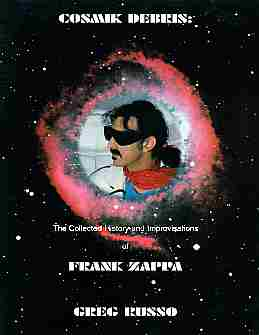
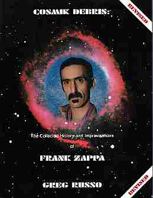

Заппа'zУх!Ой!
русский более или менее регулярный бюллетень для поклонников американского композитора
Frank'а Vincent'а Zappa'ы
Выпуск.23 (25 мая 2000)
Спроси меня как
Помните, была такая напасть - гербалайф. И молодые люди с круглыми американскими значками на месте комсомольских "Хочешь похудеть, спроси меня как". Такие славные парни, на две трети бессеребренники, постигшие тайны сжигания чужого жира, Эйнштейны двенадцатиперстной и Ньютоны прямой кишки.
А я вот, с прогрессом в противофазе оказался, то есть не жизнеутверждающему похуданию способствовал, а как раз наоборот, сподвигнул массу нагнать. Ну, да, всего лишь за один год дать 30 процентов чистого привеса.
Впрочем, одно утешает, не свинье какой-нибудь, что будь она хоть сто пудов, сожрут и точка, а книге, справочнику, предмету вечному по причине не одной лишь только несъедобности бумаги.
В общем, какое-то время тому назад случилось мне рекомендовать всем любителям фактов и цифр совершенно замечательный труд Greg Russo. Cosmik Debris. The collected history and improvisations of Frank Zappa, 1998. Во всеуслышание и горячо советовал обзавестись книженцией Грэга на всех доступных мне языках, каковых практически, если слова тохес и поц не в счет, целых два с половиной.
Приватно же, и на чистом практически английском я уговаривал Грэга обложку изменить и приделать к справочнику то, что, собственно, его и делает таковым, а именно, индекс. Раздел ссылок, удобная такая штука, кликнуть нельзя, а открыть нужную страницу можно в два счета.
Поразительно, однако, не то, что он в конце концов на это пошел, замечательно другое, Грэг Руссо согласился выслушать не одного только меня. Более того, бесстрашно позволил группе нахальных лиц из числа Интернетом объединенных поклонников ФЗ произвести полную ревизию книги.
Результат, появившееся в конце прошлого года второе издание Greg Russo. Cosmik Debris. The collected history and improvisations of Frank Zappa, (Revised), 1999 превзошел самые смелые ожидания. Мы все - Michael P. Dawson, Bill Lantz, Jon Naurin, Vladimir Sovetov, Charles Ulrich and Johan Wikberg вошли в историю. Я, например, ваш скромный соотечественник, упомянут с благодарность аж три раза. Флаг на шест и гимн, пожалуйста!
А всех дело-то было, уговорить товарищей поучаствовать, подбить Грэга посулить всем критиканам бесплатный экземпляр второго издания, сконфигурировать мэйл-лист, и, да, за оргвопросами, не забыть взять интервью у Кэнди Заппа.
На самом деле, конечно, все поработали изрядно. Если мне память не изменяет, то только список поправок и уточнений к датам концертов и составам оркестров Фрэнка разных лет, насчитывал сотни две пунктов. Или же три, или четыре, во всяком случае впечатлял. И отдан был, что тоже дорогого стоит, даром.
Ага. Единственный из нас, кто действительно заработал немного денег был профессиональный лингвист Charles Ulrich, но так было решено сразу, потому что он не только блох ловил, а свел все наше ворчанье воедино, затем отредактировал готовую рукопись и... и составил этот чертов индекс, которого так домогался известный вам хрен из Сибири.
Короче, наев еще сорок страниц в ширь, книга получилась. Мне нравится. Все в ней есть, без лишних эмоций, просто хронологически выстроенный биографический очерк, подробнейшая дискогорафия (включающая такие этнографические чудеса, как латиноамериканские издания пластинок с надписями на ковбойском испанском языке), видеография (список страниц на пять, в котором полнометражные фильмы мирно уживаются с двухминутными эпизодами каких-то давно забытых телешоу), фантастическая концертная летопись от школьной вечеринки пятьдесят четвертого, до последнего выхода на сцену с гитарой будапештским летом 1991. Все есть, положительно все и еще немного.
Кстати, вот сейчас решил посчитать компакты, перечисляемые в разделе "камерная музыка ФЗ в записях и концертном исполнении", но после двадцать пятого сбился.
Одним словом, Госкомстат отдыхает. И Центр управления полетами тоже. Не верите? Взгляните сами.
| БЫЛО | СТАЛО |
|
 |
 |
Нашли два отличия? Конечно, до полной Dwarf Nebul'ы не дожал я Грега, но млечности и синевы стало больше. Согласны? Да я и не сомневался, уже где, где, а на родине Юрия Гагарина народ разбирается в космических делах.
Странно, другое, отчего на родине разных биллей о высоком и красивом народ иной раз путается в очевидных вопросах авторских прав. Это я, забалованный благодарностями в предисловиях, удивляюсь почему Грэг, поперев с моего сайта (что само по себе нормально, для того и положено было) большую часть комментариев в раздел Conceptual Continuity Clues своей книги забыл написать, где все эти сокровища нарыл.
А еще, ведь писал я, писал, документ имеется, файл то есть, дата образования
[sova@arf Russo]$ ls -l errata2 -rw-r--r-- 1 sova sova 4630 Sep 26 1998 errata2
и повтороно
[sova@arf Russo]$ ls -l errata.my
-rw-r--r-- 1 sova sova 11537 Oct 7 1998 errata.my
In 1993 Moscow based SNC Records company was authorised to
issue The Man From Utopia both in LP and CD format here in Russia.
LP's track's order as on CD (and Luigi included too)
LP SNC-3085,
Unfortunately no info on CD cat. number.
Так не включил же в дискографию нашу родную московскую стряпню! Стаса Намина, что ли, невзлюбил? Сауди-Арабская кассета Mothers Of Pervention в списке, а комиссаров из Баку нема. Обидно!
Впрочем, должно быть, это случайно и нечаянно. Недоразумение. В третьем издании поправит. И, вообще, уже если заносчивый Маяковский соглашался на общий памятник, то уж мне-то, скромняге, сам Бог велел. В обшем и целом, так, друзья:
Хороших книжек полно в Моссельпроме,
Но есть еще краше на Амазоне!
Искренне Ваш, Владимир Советов
http://www.arf.ru/
| Домой | Заппа'zУх!Ой! | Поиск | Хозяин |